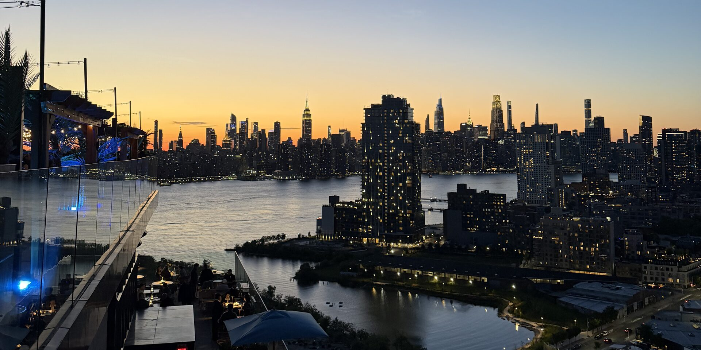

| Neighborhood | Borough | Why teens like it | Getting around |
|---|
No neighborhoods match these filters.
Clear a filter to see more.

Skipping Times Square, the best bases for teens are SoHo or the West Village for shopping and street life, DUMBO or Williamsburg in Brooklyn for skyline views and a local feel, and Midtown East or Flatiron if you want to stay central without the crowds.
Every area below is 1–3 subway stops or a 15–25 minute ride from the main sights.
| Neighborhood | Borough | Why teens like it | Getting around |
|---|
No neighborhoods match these filters.
Clear a filter to see more.